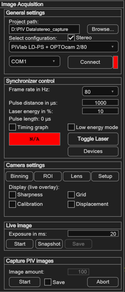
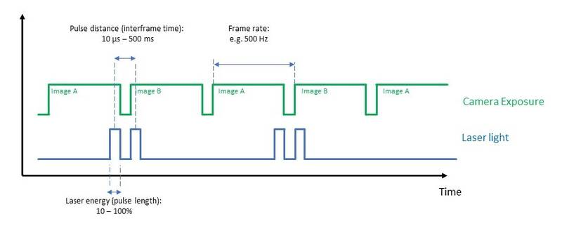
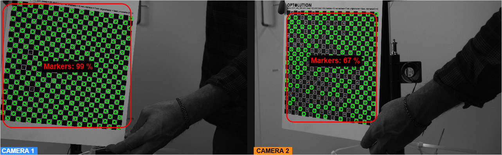

Capturing images from a camera
PIVlab records PIV image pairs directly from a connected camera and, with a PIVlab synchronizer, triggers and times the pulsed laser to match. The recorded images go straight into the session, so you can analyse them without importing anything.
Open via Image acquisition → Capture PIV images, or the Acquire images button in the Input data panel. When you run PIVlab inside MATLAB, camera access needs the Image Acquisition Toolbox; the standalone PIVlab has it compiled in.

Connecting the equipment
- Mount camera and laser, and aim them at the measurement area.
- Connect the synchronization cable from the synchronizer to the camera.
- Connect the camera to the computer.
- Connect the safety interlock (for example a door switch). Its contact has to be closed, otherwise the laser stays locked.
- Connect the power supply and switch the laser on.
- Plug in the USB wireless link — this is how PIVlab talks to the synchronizer.
- Start PIVlab and open the Image acquisition panel.
The panel, part by part
General settings
| Control | What it does |
|---|---|
| Project path / Browse… | Folder for the recorded images and the configuration. |
| Select configuration | Your synchronizer + camera combination, e.g. PIVlab LD-PS + OPTOcam 2/80. PIVlab then looks for that camera and loads the matching firmware settings. Webcam demo (no synchronizer) runs the panel without PIV hardware (see below). |
| Stereo | Record with two cameras of the selected type for stereo-PIV (see below). |
| COM port / Connect | Serial port of the synchronizer. The indicator next to the button is red while disconnected and green once the synchronizer answers. |
Synchronizer control
| Control | What it does |
|---|---|
| Frame rate in Hz | Rate of the double images during capture. The available values come from the selected camera. |
| Pulse distance in µs | Time between the two laser pulses — the Δt of the image pair. See Choosing the pulse distance. |
| Laser energy in % | Energy per pulse. |
| Pulse length | Read-out, not an input: the pulse length PIVlab derives from the energy and the configuration. |
| Timing graph | Draws where the camera exposures and the laser pulses sit in time, for the current settings. |
| Low energy mode | Pulses the laser at 100 Hz with the shortest pulse (1 µs) so you can align the sheet at a fraction of the average power. Synchronized capture is switched off while this is active. |
| Toggle Laser | Switches the laser on and off. The field to its left shows the laser state. |
| Trigger mode | Configures the trigger input, so an external signal can start the recording. Shown for synchronizers that support it. |
| Devices | Setup of further remote-controlled equipment on the wireless link, such as a seeding generator. |
Camera settings
| Control | What it does |
|---|---|
| Binning | Combines neighbouring pixels: brighter image, lower resolution. |
| ROI | Reads out only part of the sensor, which allows higher frame rates. |
| Lens | Lens control for cameras that support it, including autofocus. |
| Setup | Camera-specific settings such as bit depth and gain, and the serial numbers of the connected cameras. |
| Sharpness | Overlays a focus measure — use it to focus by eye. Works in the live image and in the PIV preview. |
| Grid | Overlays a grid, for aligning the camera. Works in the live image and in the PIV preview. |
| Calibration | Live detection of a ChArUco board — see below. Works in the live image only. |
The Calibration overlay does three things at once, which makes it the quickest way to check a board and a camera position:
- It marks the detected markers and reports what percentage of them it found.
- It reads the QR code printed on the board and fills the board definition from it: pattern dimensions, origin colour, marker family, and the checker and marker size in mm — the scale of the board. You do not have to type those numbers in.
- Once a camera calibration has been performed, it also reports the camera position and orientation relative to the board: yaw, pitch and roll, and the camera X, Y and Z in mm, where X and Y run along the board and Z is the distance in front of it. Without a calibration it tells you to perform one first.
Live image
Here the camera runs freely: it is not triggered by the synchronizer, so the laser pulses and the camera exposures are not locked to each other. Brightness and particle images in this view therefore say nothing about the images you will record. Use it to aim the camera, to record the board image, and to focus on a target placed in the plane of the light sheet. To focus on the particles themselves, use the PIV preview.
| Control | What it does |
|---|---|
| Exposure in ms | Camera exposure for the live view. |
| Start | Starts the live view. Zoom and the Calibration overlay work only here. |
| Snapshot | Saves the image currently displayed into the project folder. |
| Save | Stops the live view and keeps the last image — this is how the board image for the camera calibration is recorded. |
Capture PIV images
Here the camera runs synchronized with the laser. The Save tick decides what Start does: without it you get a running preview, with it a recording.
| Control | What it does |
|---|---|
| Save | Off: Start runs a PIV preview — synchronized double images, nothing written to disk, running until you stop it. On: the images are written to the project folder and Image amount becomes editable. |
| Image amount | Number of double images to record. The field turns red when the amount will most likely not fit into your RAM. |
| Start | Starts the laser and the synchronized camera. PIVlab asks before the laser starts, and — when saving — before existing files are overwritten. |
| Abort | Ends the preview, or stops a recording and discards its images. |
When a recording ends, the images are loaded into the session automatically. Step through the pairs with the frame slider and run a quick analysis to see whether the data is good before you record more.
A recording from start to finish
- Set the Project path.
- Choose the Select configuration entry for your hardware and connect the synchronizer.
- Set bit depth and gain under Setup, and the Frame rate.
- Aim the camera with the Live image, and place a target in the plane of the light sheet if you want to focus roughly before the laser runs.
- Set the Pulse distance (see below) and the Laser energy.
- Leave Save unticked and click Start to run the PIV preview. Focus here — with Lens → autofocus or by eye with the Sharpness overlay — and adjust seeding and laser energy until the particle images look good. Then Abort.
- Tick Save, set the Image amount, and click Start.
- Check the recording: step through the pairs and analyse a few frames.
Pulse distance and frame straddling
The pulse distance is the Δt of your image pair, and it decides how far particles travel between the two images. Choose it so that the displacement fits the interrogation area you plan to use — Choosing Δt together with the interrogation area covers how to find a good value and how to read the displacement back from a test analysis.
How frame straddling works
The two images of a pair are two consecutive camera frames. Instead of lighting each frame in the middle, the synchronizer puts the first laser pulse at the very end of the first frame's exposure and the second at the very beginning of the next one. Both pulses sit close together around the frame boundary, one on each side. This is frame straddling, and it is how PIVlab records PIV images.

The point is that Δt is then set by the distance between the two pulses, not by the frame rate. With continuous light the two images are a full frame period apart, so a 100 Hz camera gives Δt = 10 ms and nothing faster can be measured. With straddling the same camera can use a Δt of a few microseconds.
How much that buys you follows from the displacement limit. With a field of view L, a sensor of N pixels and a largest acceptable displacement s in pixels:
For L = 100 mm, N = 2000 px and s = 10 px, the particles may travel 0.5 mm between the two images.
| Δt | Highest measurable velocity |
|---|---|
| 10 ms | 0.05 m/s — what a 100 Hz camera with continuous light is limited to |
| 1 ms | 0.5 m/s |
| 100 µs | 5 m/s |
| 10 µs | 50 m/s |
Same camera, same laser — only the pulse distance changes.
Δt cannot be made arbitrarily small. The lower limit comes from the camera: the two pulses have to fit on either side of the frame boundary, and with double-shutter cameras the gap between the two exposures is fixed by the sensor readout. The upper limit is one frame period. PIVlab enforces both — enter a value below the camera's minimum or above the frame period and the field briefly turns red and is set to the limit.
Switch Timing graph on to see it: camera exposures and laser pulses are drawn against time in µs over several frames, so you can check that the two pulses really do sit on either side of the frame boundary.
Stereo acquisition (two cameras)
For stereo-PIV, PIVlab records with two cameras of the same type at the same time (at present the OPTOcam 2/80).
- Connect both cameras to the computer, and both to the camera output of the synchronizer (Y-cable). Both cameras get the same trigger; frame rate, pulse distance, laser energy, exposure, bit depth, gain and ROI apply to both.
- Select the configuration and tick Stereo. PIVlab checks that two cameras are connected.
- Live image shows both cameras side by side. Camera 1 is the camera with the lower serial number; Setup shows both serial numbers, and Swap cameras exchanges camera 1 and 2.
- With Calibration ticked, the markers of a ChArUco board are shown in both images. Place the board in the light sheet so that both cameras see it well; Snapshot then saves one image per camera: the board images for the stereo calibration.
- Capture PIV images saves the images of camera 1 in the subfolder
cam1and those of camera 2 incam2of the project folder, and opens them in stereo mode. The next recording with the same setup keeps the stereo calibration.

If one camera misses a trigger (e.g. at a frame rate that is too high for its USB connection), its images no longer belong to those of the other camera. PIVlab compares the frame times of both cameras after the recording and warns. Lens control works with one camera only.
Trying it with just a webcam
The Webcam demo (no synchronizer) configuration runs the capture workflow against an ordinary USB webcam, so you can see how the panel behaves before setting up real equipment. It needs the free MATLAB Support Package for USB Webcams. Everything that belongs to the synchronizer, the laser and a PIV camera is switched off, and the images it produces are a demonstration, not PIV data.